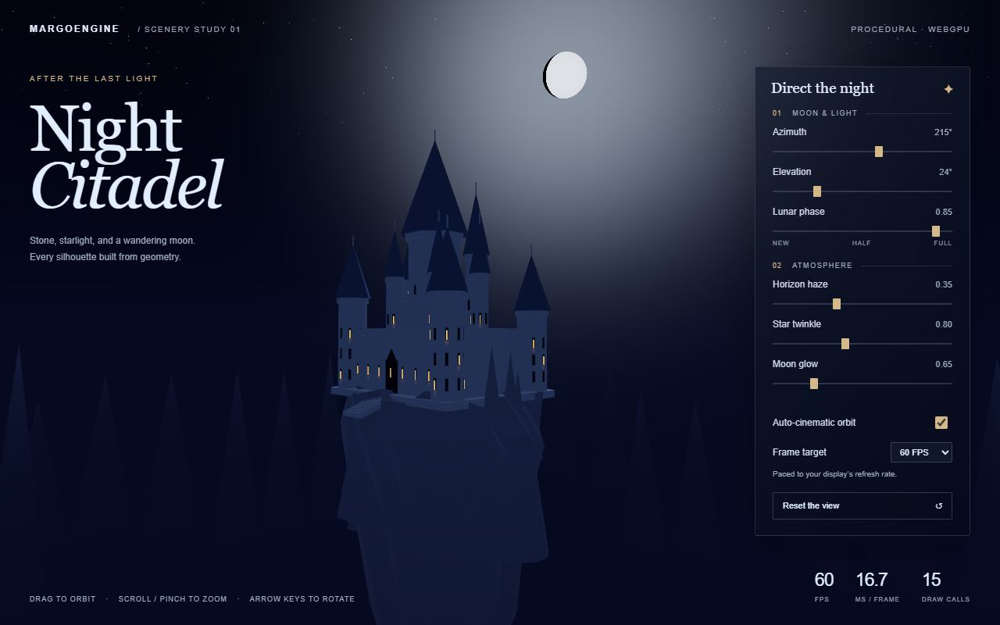
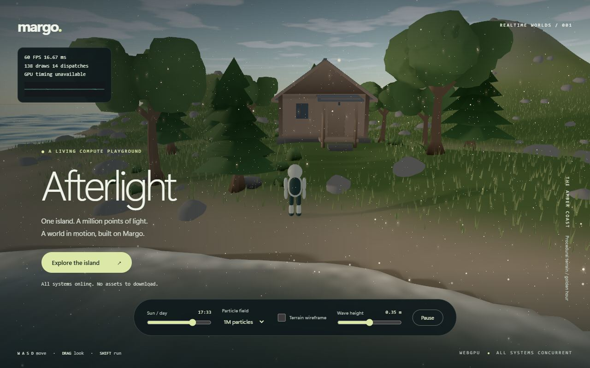
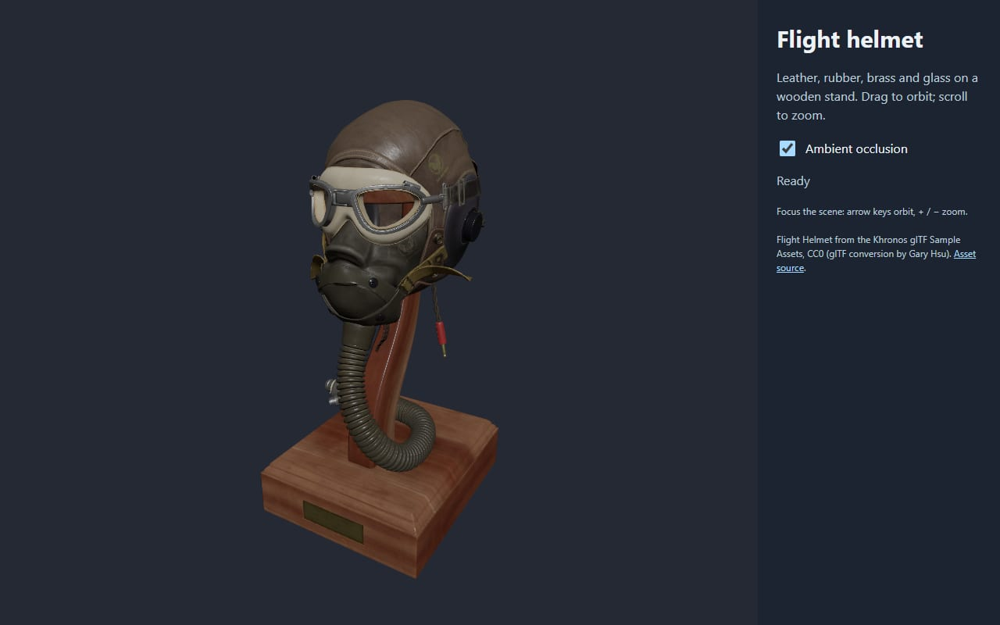
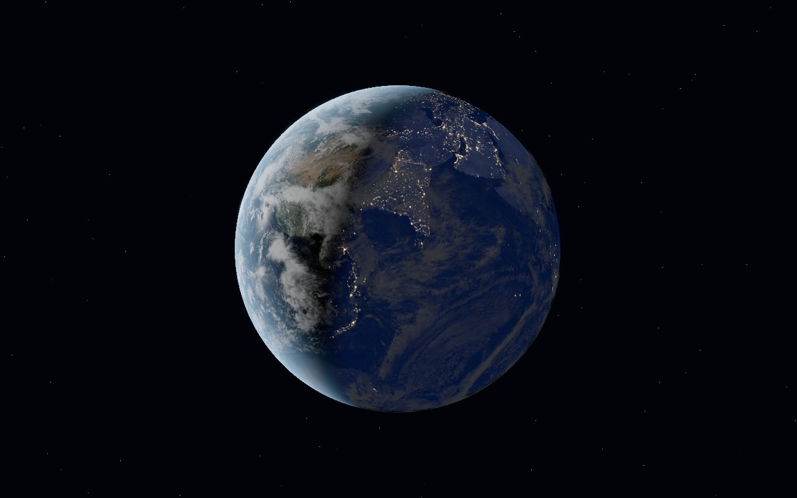
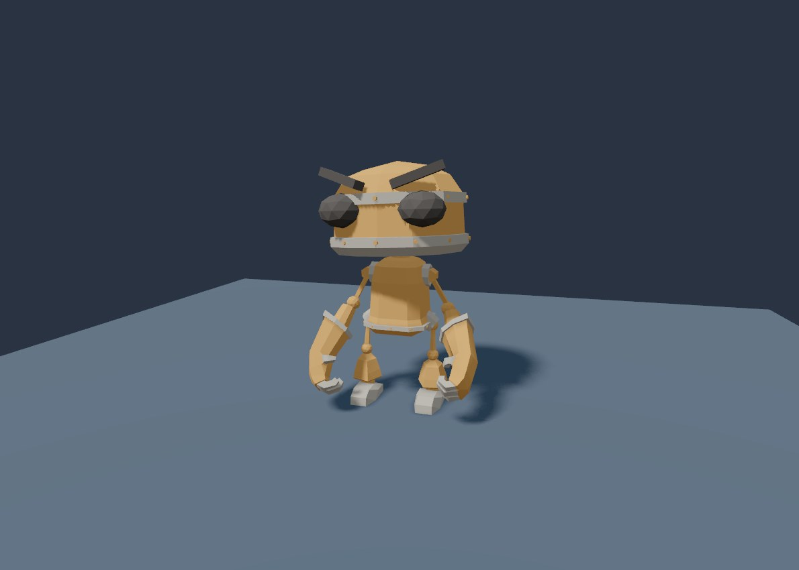

A 3D engine for the web that starts under 20 kB gzipped.
A TypeScript engine with a Rust kernel compiled to WebAssembly, WebGPU rendering, an optional WebGL2 fallback, and optional packs.

Five lines to a rendered scene
The margoengine facade mounts a canvas, enables orbit controls and starts rendering.
import {createStage} from 'margoengine';
const app = await createStage('#scene');
const orb = app.sphere({color: '#84d6bd', roughness: 0.25});
app.onTick(delta => {orb.rotation.z += delta;});
window.addEventListener('pagehide', () => app.dispose(), {once: true});Run it from source today
git clone https://github.com/scottcampbelldata/margoengine.git
cd margoengine
npm ci
npm run devNeeds Node.js 22.12 or newer. The Wasm kernel is checked in, so no Rust toolchain is required.
Install from npm, once published
npm install @margoengine/corenpm publication is pending. The release includes 70 packages under @margoengine and the margoengine stage facade. Browse all packages and runnable examples
What the core gives you
- Under 20 kB gzip
- Core plus the stage facade, with the embedded Wasm kernel and the WebGPU backend. The build fails at 20,000 bytes gzip or above;
npm run measure:sizeprints the current figure. The WebGL2 fallback is the optional@margoengine/webgl(2.2 kB gzip). - Transforms in Wasm memory
- Hierarchy, culling and world matrices run in a Rust kernel over flat typed arrays. An engine starts with 1,024 entity slots and doubles them on demand, up to 8,388,608.
- Instancing by default
- Visible meshes sharing a geometry instance render in one instanced draw call per scene pass, with per-instance material values.
- WebGPU first, WebGL2 fallback
- Reversed float depth, GPU picking and automatic device-loss recovery on WebGPU. Basic scenes (core meshes, flat PBR, one light) also render on WebGL2 with the optional
@margoengine/webglpackage. - Plugins, not a monolith
- Frame-graph passes and shader hooks let optional packs add features without growing the base bundle.
Optional packs
Each pack is a separate, side-effect-free package. Your bundle includes only the ones it imports.
Assets
gltf and gltf-pro for static and textured glTF, blender for prepacked .margo exports, plus loaders for STL, OBJ, PLY, 3MF, USDZ and IFC.
Rendering
environment for HDR image-based lighting, shadows, clustered lights, post for SSAO, taa, tonemap and lines.
Interaction
controls for orbit, fly and transform gizmos, selection for outlines and picking, and react for ordinary React 18 and 19 components.
Domains
machinery for joints, sections, dimensions and CAD import, creative and vfx for particles and post effects, scenery, terrain and splats.
See it running
Every demo below runs live in your browser. They need WebGPU, so use a current Chrome or Edge on desktop.

Gameplay sandbox Terrain, water, scattered foliage, lights and effects in one real-time scene.
Flight helmet Textured PBR leather, glass and wood with an ambient occlusion toggle.
Earth Orbit a globe with HDR city lights, drifting clouds, ocean highlights and atmosphere.
Character study A walking robot with animation clips and facial morph sliders. Windy meadow Wind-blown grass, drifting clouds, and daylight you control.Optional effects: Depth of field · Tonemapping and color grading
Where it stands
Margo Engine is at version 0.1.0 and MIT licensed. WebGPU needs a supporting browser on HTTPS or localhost. Particles, sections, image-based lighting and the scenery pack require WebGPU; CPU-side machinery and CAD tools work on either backend. Its real-GPU test suites run in Edge (Chromium) on a Windows laptop with an Intel Arc 140V; Chrome uses the same engine. Firefox, Safari and mobile GPUs are not yet verified.
Design envelope: every hard limit, where it starts, and the package or tool that takes you past it.